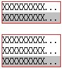
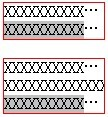
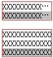
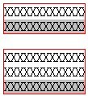
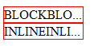
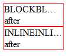
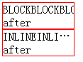
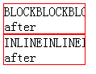

'text-overflow' 是 CSS3 中的新特性，处于草案阶段；该特性可以作用于块级元素、行内元素和单元格，当其值是 'ellipsis' 时，被剪除的文本将用省略号表示。
关于 'text-overflow' 特性的详细信息，请参照 W3C CSS3 规范草案 'text-overflow' 。
'text-overflow' 特性是 CSS3 中的新特性，处于草案阶段，各浏览器对 'text-overflow:ellipsis' 的支持情况各不相同。 其中，IE 支持的最好，Webkit 浏览器只支持不包含块级元素的元素，Firefox 彻底不支持。
当意图使用 'text-overflow:ellipsis' 将溢出的内容使用省略号替代时，由于各浏览器对 'text-overflow' 特性支持程度不同，导致应用了该特性的元素显示效果产生差异。
| 所有浏览器 |
|---|
对于此问题，我们通过以下的测试用例来说明。
分析以下代码：
<div id="DIV1" style="width:100px; overflow:hidden; text-overflow:ellipsis; border:1px solid
red;"> XXXXXXXXXXXXXXXXXXXXXXXXX <span style="background-color: silver;">
<span>XXXXXXXXXXXXXXXXXXXXXXXXX</span> </span> </div> <br/> <div
id="DIV2" style="width:100px; overflow:hidden; text-overflow:ellipsis; border:1px solid red;">
XXXXXXXXXXXXXXXXXXXXXXXXX <div>XXXXXXXXXXXXXXXXXXXXXXXXX</div> <span
style="background-color: silver;"> <span>XXXXXXXXXXXXXXXXXXXXXXXXX</span> </span>
</div>根据草案，DIV1 和 DIV2 中的文本，被剪除的部分都应该用省略号表示。
这段代码在不同的浏览器环境中表现如下：1
| IE6 IE7 IE8(Q) | IE8(S) | Chrome Safari | Firefox |
|---|---|---|---|
|  |  |  |  |
注1：忽略 'text-overflow:ellipsis' 对背景色的影响。
可见：
另外，在 Webkit 浏览器中，':after' 伪元素如果被设置成一个块级元素，'text-overflow:ellipsis' 会失效。
分析以下代码：
<style type="text/css"> #block:after { content: "after"; display: block; } #inline:after {
content: "after"; display: inline; } </style> <div id="block" style="width:100px;
overflow:hidden; text-overflow:ellipsis; border:1px solid red;"> BLOCKBLOCKBLOCKBLOCKBLOCKBLOCK
</div> <div id="inline" style="width:100px; overflow:hidden; text-overflow:ellipsis; border:1px
solid red;"> INLINEINLINEINLININLINEINLINE </div>根据草案，两个 DIV 中的文本，被剪除的部分都应该用省略号表示。
这段代码在不同的浏览器环境中表现如下：2
| IE6 IE7 IE8(Q) | IE8(S) | Chrome Safari | Firefox |
|---|---|---|---|
|  |  |  |  |
注2：IE6 IE7 IE8(Q) 不支持 :after 伪元素，所以没有 'after' 的文本。
可见：
在 Webkit 浏览器中，如果元素的 :after 伪元素是一个块级元素，会使该元素的 'text-overflow:ellipsis' 失效。
不要在包含块级元素的元素上使用 'text-overflow:ellipsis'，并且当使用 :after 伪元素时，确保伪元素不是块级元素。Firefox 中可以通过 XUL 实现 'text-overflow:ellipsis' 的效果。
针对 Firefox 使用 XUL 实现 'text-overflow:ellipsis' 效果的参考代码如下：
定义专用在 Firefox 下名为 'ellipsis' 的 class ：
.ellipsis { -moz-binding: url('ellipsis.xml#ellipsis'); }
使用 Firefox 的 XUL 实现 'text-overflow:ellipsis' 的 ellipsis.xml ：
<?xml version="1.0"?> <bindings xmlns="http://www.mozilla.org/xbl"
xmlns:xbl="http://www.mozilla.org/xbl"
xmlns:xul="http://www.mozilla.org/keymaster/gatekeeper/there.is.only.xul" > <binding
id="ellipsis"> <content> <xul:description crop="end" xbl:inherits="value=xbl:text">
<children/> </xul:description> </content> </binding> </bindings>
测试代码：
<div class="ellipsis" style="width:100px;border: 1px solid red;overflow:hidden;">
XXXXXXXXXXXXXXXXXXXXXXXXXXXXXXXXXXXXXXX </div>
在 Firefox 中表现如下：
| 操作系统版本: | Windows 7 Ultimate build 7600 |
|---|---|
| 浏览器版本: |
IE6
IE7 IE8 Firefox 3.6 Chrome 5.0.356.2 dev Safari 4.0.4 |
| 测试页面: |
text-overflow.html
text-overflow_after.html text-overflow_firefox.html ellipsis.xml |
| 本文更新时间: | 2010-07-19 |
text-overflow ellipsis 省略号